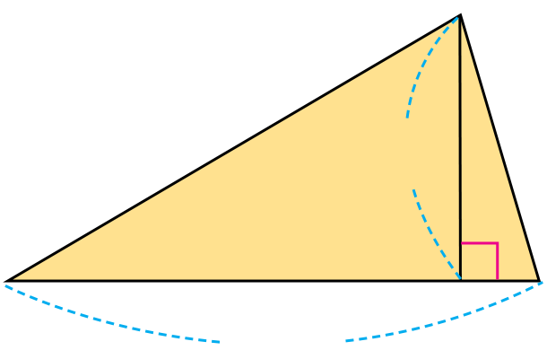
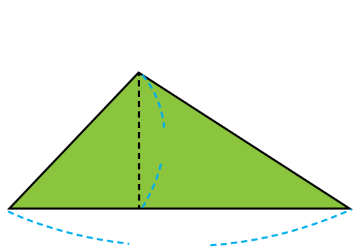

- 문제 1
- 문제 2
- 문제 3
- 문제 4
- 문제 5
-
삼각형의 밑변이 다음과 같을 때 높이를 표시해 보시오.
밑변 높이밑변 높이 -
삼각형의 넓이를 구해 보시오.
 4 ㎝ 8 ㎝ ㎠16 -
두 삼각형 중 넓이가 더 넓은 것을 찾아 보시오.
가 4 m 10 m나6 m 9 m나 -
넓이가 다른 삼각형을 찾아 기호를 쓰시오.
가 나 다 1 cm 1 cm다 -
색칠한 부분의 넓이를 구하시오.
8 ㎝ 12 ㎝ 26 ㎝ ㎠108